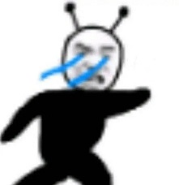
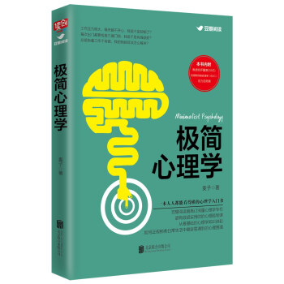
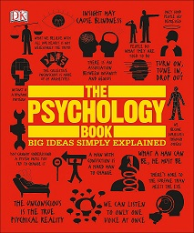

WELCOME TO MY HOBBIES!
Well to be honest I really do not have many hobbies compared to maybe everyone in the class. I also have 0 hobbies that are related to sports or exercising. I'm more of a stay at home and relax kind of person. (Which is not very good for your health.)
Psychology
My favorite hobby has to be psychology. Yes psychology is a hobby for me. I love learning psychology online in my free time. I have been taking an online psychology course for half a year now.(Not because I have learned a lot. It's because I barely have free time)
In the past I never thought that I would enjoy psychology. It was not until the summer in 2019 that I really liked psychology. I went to a bookstore in China and I went to look at books in the medicine section. When I was looking I saw this book called"inimalist Psychology by MaiZi".
When I finished reading the book, I had a desire of learning more about psychology and taking psychology in university. This book was the start of my journy in psychology and gave me and idea of what to take in university. There are many psychology books that are in english. I would recommend "The psychology book: big ideas simply explained by Catherine Collin". Psychology is very interesting topic to learn about!
Cooking
My second favourite hobby is cooking. I have liked cooking since the age of 9. The first thing that I learned to cook Stir-fried tomato and scrambled eggs, which my grandpa taught me how to cook. Ever since then I would cook on holidays for my family. I think that cooking is fun and fascinating. I enjoy the feeling of eating my own dishes(when they taste good) it makes me feel confident that I have something that I am good at.
I also have many other hobbies for example photography, drawing, badminton, and reading.